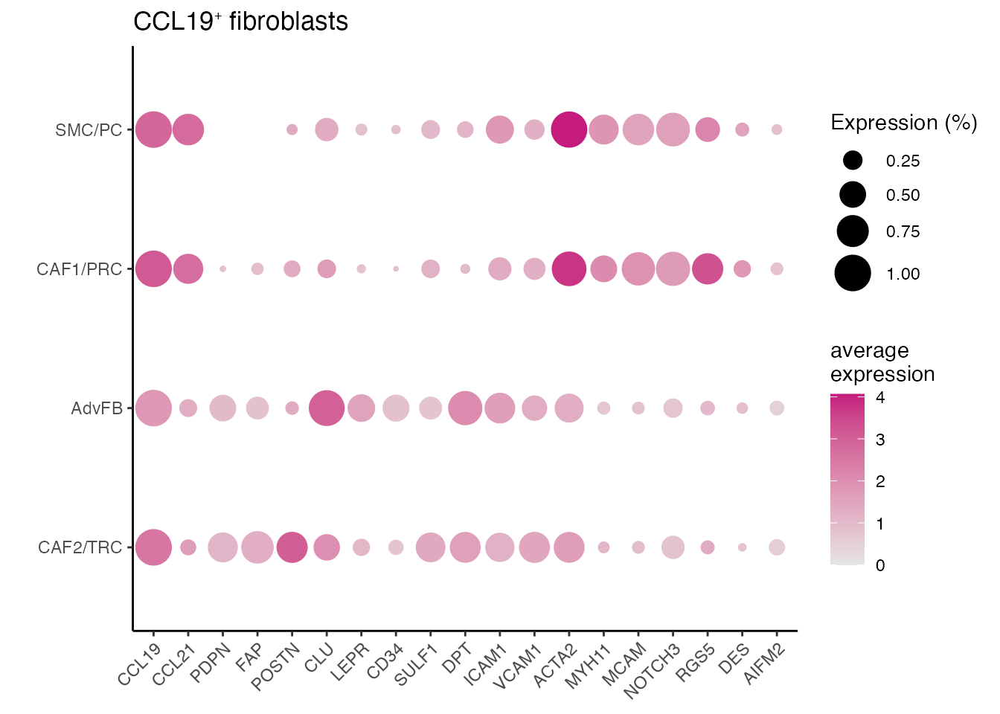

NSCLC stroma and CCL19 cells
Chrysa Papadopoulou
Last updated: 2024-08-22
Checks: 7 0
Knit directory: CCL19_FRCs_lung_cancer/
This reproducible R Markdown analysis was created with workflowr (version 1.7.1). The Checks tab describes the reproducibility checks that were applied when the results were created. The Past versions tab lists the development history.
Great! Since the R Markdown file has been committed to the Git repository, you know the exact version of the code that produced these results.
Great job! The global environment was empty. Objects defined in the global environment can affect the analysis in your R Markdown file in unknown ways. For reproduciblity it’s best to always run the code in an empty environment.
The command set.seed(20240808) was run prior to running
the code in the R Markdown file. Setting a seed ensures that any results
that rely on randomness, e.g. subsampling or permutations, are
reproducible.
Great job! Recording the operating system, R version, and package versions is critical for reproducibility.
Nice! There were no cached chunks for this analysis, so you can be confident that you successfully produced the results during this run.
Great job! Using relative paths to the files within your workflowr project makes it easier to run your code on other machines.
Great! You are using Git for version control. Tracking code development and connecting the code version to the results is critical for reproducibility.
The results in this page were generated with repository version 3ff85ba. See the Past versions tab to see a history of the changes made to the R Markdown and HTML files.
Note that you need to be careful to ensure that all relevant files for
the analysis have been committed to Git prior to generating the results
(you can use wflow_publish or
wflow_git_commit). workflowr only checks the R Markdown
file, but you know if there are other scripts or data files that it
depends on. Below is the status of the Git repository when the results
were generated:
Ignored files:
Ignored: .DS_Store
Ignored: analysis/.DS_Store
Ignored: data/Human/
Ignored: data/Mouse/
Ignored: output/GSEA_AdvFB_SULF1/
Ignored: output/GSEA_AdvFB_TLS/
Ignored: output/GSEA_CCR7_T/
Ignored: output/GSEA_CD8_T/
Ignored: output/GSEA_CYCL_T/
Ignored: output/GSEA_EXH_T/
Ignored: output/GSEA_SMC_PRC/
Untracked files:
Untracked: README.html
Untracked: analysis/Compare_tumors.Rmd
Untracked: analysis/NSCLC_PDAC_CAFs.Rmd
Untracked: analysis/Seurat_to_SCE.Rmd
Untracked: analysis/Total_CD8_DTR_Tetra.Rmd
Untracked: analysis/index_hidden.Rmd
Untracked: analysis/mcov_R.Rmd
Unstaged changes:
Modified: analysis/extra_functions.R
Note that any generated files, e.g. HTML, png, CSS, etc., are not included in this status report because it is ok for generated content to have uncommitted changes.
These are the previous versions of the repository in which changes were
made to the R Markdown
(analysis/NSCLC_stroma_CCCL19_FRC.Rmd) and HTML
(docs/NSCLC_stroma_CCCL19_FRC.html) files. If you’ve
configured a remote Git repository (see ?wflow_git_remote),
click on the hyperlinks in the table below to view the files as they
were in that past version.
| File | Version | Author | Date | Message |
|---|---|---|---|---|
| Rmd | 3ff85ba | Pchryssa | 2024-08-22 | NSCLC CCL19 FRCs |
| html | d4abf9c | Pchryssa | 2024-08-21 | Build site. |
| Rmd | 56cd3c3 | Pchryssa | 2024-08-21 | NSCLC stroma CCCL19 FRC |
Load packages
suppressPackageStartupMessages({
library(here)
library(purrr)
library(dplyr)
library(stringr)
library(patchwork)
library(Seurat)
library(Matrix)
library(dittoSeq)
library(gridExtra)
library(gsubfn)
library(ggsci)
})Stroma cells in NSCLC
Set directory
basedir <- here()Read Stroma cell data
data <- readRDS(paste0(basedir,"/data/Human/NSCLC_stroma_total.rds"))Define color palette
cols<- pal_igv()(51)
names(cols) <- c(0:50)NSCLC Stroma cells (Supplementary Figure 2A-2B)
Patients
# Total fibroblasts and endothelial cells across NSCLC patients
colors_pID <-c("#F8766D","#00C08B","#00B4F0","#0ADD08","#B79F00")
names(colors_pID) <-c("NSCLC#2","NSCLC#3","NSCLC#4","NSCLC#6","NSCLC#7")
DimPlot(data, reduction = "tsne", group.by = "patient", cols=colors_pID)+
theme_bw() +
theme(axis.text = element_blank(), axis.ticks = element_blank(),
panel.grid.major = element_blank(),
panel.grid.minor = element_blank()) +
xlab("tSNE1") +
ylab("tSNE2") + ggtitle("Patients")
Origin
# Total fibroblasts and endothelial cells isolated from SM, CM and unaffected lung (LU)
colors_origin <-c("red","blue" ,"#33CC00FF")
names(colors_origin) <- c("Subpleural Margin","Lung (unaffected)","Central Margin")
DimPlot(data, reduction = "tsne", group.by = "origin", cols=colors_origin )+
theme_bw() +
theme(axis.text = element_blank(), axis.ticks = element_blank(),
panel.grid.major = element_blank(),
panel.grid.minor = element_blank()) +
xlab("tSNE1") +
ylab("tSNE2") + ggtitle("Origin")
COL1A2
FeaturePlot(data, reduction = "tsne",
features = get_full_gene_name('COL1A2',data),raster=FALSE,
cols=c("lightgrey", "darkred")) + ggtitle("CAF/FB(COL1A2)")
PECAM1
FeaturePlot(data, reduction = "tsne",
features = get_full_gene_name('PECAM1',data),raster=FALSE,
cols=c("lightgrey", "darkred")) + ggtitle("EC(PECAM1)")
Cell type
palet <- cols[4:10]
names(palet) <- c("CAF2","CAF1", "EC", "FB" ,"Meso","SMC/PC")
DimPlot(data, reduction = "tsne", group.by = "cell_type", cols= palet)+
theme_bw() +
theme(axis.text = element_blank(), axis.ticks = element_blank(),
panel.grid.minor = element_blank(),
panel.grid.major = element_blank()) +
xlab("TSNE1") +
ylab("TSNE2") 
Dotplots (Supplementary Figure 2C and 2F)
Cell type assignment
data_conv <-data
data_conv <-Remove_ensebl_id(data_conv)
Idents(data_conv) <- data_conv$cell_type
levels(data_conv)<-levels(data_conv)[order(match(levels(data_conv),c("CAF2","FB","CAF1","SMC/PC","Meso","EC")))]
data_conv$cell_type <- factor(as.character(data_conv@active.ident), levels = rev(c("CAF2","FB","CAF1","SMC/PC","Meso","EC")))
gene_list <-c("COL1A2","POSTN","MMP2","PDPN","PDGFRA","PDGFRB","ACTA2","RGS5","KRT19","PECAM1")
gg <- dittoDotPlot(data_conv, vars = gene_list, group.by = "cell_type", size = 9,legend.size.title = "% expressed",scale = FALSE,summary.fxn.color = mean, max = 6.5, min = 0 , min.color = "#D1E5F0" , max.color = "#631879FF")
gg + ggtitle("Celltype assignment")
Chemokines
gene_list <-c("CCL19","CCL21","CCL3","CCL5","CCL8","CXCL10","CXCL3","CXCL9")
gg <- dittoDotPlot(data_conv, vars = gene_list, group.by = "cell_type", size = 9,legend.size.title = "% expressed",scale = FALSE,summary.fxn.color = mean, min.percent = 0.02, max.percent = 0.7, max = 1.6, min = 0 ,min.color = "#D1E5F0" , max.color = "#631879FF")
gg + ggtitle("Chemokines")
Stacked Barplots (Supplementary Figure 2D and 2E)
Number of cells per patient
df <-data@meta.data %>% count(patient, cell_type) %>% # Group by patient and cell_type, then count number in each group
mutate(pct=n/sum(n)) # Calculate percent within each patient
df$cell_type <- factor(df$cell_type, levels=names(palet))
df$patient <- factor(df$patient, levels=c("NSCLC#2", "NSCLC#3" ,"NSCLC#4" ,"NSCLC#6" ,"NSCLC#7"))
ggplot(df, aes(patient, n, fill=cell_type)) +
geom_bar(stat="identity") +
theme( axis.line = element_line(),
panel.grid.major = element_blank(),
panel.grid.minor = element_blank(),
panel.background = element_blank()) +
scale_y_continuous(expand = c(0, 0))+
labs(y= "Cells", x= " ") +
scale_fill_manual(values = palet)
Number of cells per origin
df <-data@meta.data %>% count(origin, cell_type) %>% # Group by orign and cell_type, then count number in each group
mutate(pct=n/sum(n)) # Calculate percent within each patient
df$cell_type <- factor(df$cell_type, levels=names(palet))
df$origin <- factor(df$origin, levels=c("Lung (unaffected)", "Subpleural Margin", "Central Margin"))
ggplot(df,aes(origin, n, fill=cell_type)) +
geom_bar(stat="identity") +
theme( axis.line = element_line(),
panel.grid.major = element_blank(),
panel.grid.minor = element_blank(),
panel.background = element_blank()) +
scale_y_continuous(expand = c(0, 0))+
labs(y= "Cells", x= " ") +
scale_fill_manual(values = palet)
CCL19⁺ FRCs in NSCLC
Read CCL19⁺ FRC data
NSCLC_CCL19_data <- readRDS(paste0(basedir,"/data/Human/NSCLC_CCL19_FRCs_CAFs.rds"))CCL19⁺ fibroblasts (Figure 1K)
#Define color palet
palet_CCL19_FRC <- c("#1B9E77", "#54B0E4","#E3BE00", "#E41A1C")
names(palet_CCL19_FRC) <- c("CAF2/TRC","CAF1/PRC","AdvFB" ,"SMC/PC")
palet_CCL19_FRC <- palet_CCL19_FRC[names(palet_CCL19_FRC) %in% unique(NSCLC_CCL19_data$cell_type)]
DimPlot(NSCLC_CCL19_data, reduction = "umap", group.by = "cell_type",cols = palet_CCL19_FRC)+
theme_bw() +
theme(axis.text = element_blank(), axis.ticks = element_blank(),
panel.grid.minor = element_blank(),
panel.grid.major = element_blank()) +
xlab("UMAP1") +
ylab("UMAP2") + ggtitle(paste0("CCL19", "\U207A ", "fibroblasts"))-1.png)
Dotplot (Figure 1L)
data_conv <-NSCLC_CCL19_data
data_conv <-Remove_ensebl_id(data_conv)
Idents(data_conv) <- data_conv$cell_type
levels(data_conv)<-levels(data_conv)[order(match(levels(data_conv),c("SMC/PC","CAF1/PRC","AdvFB","CAF2/TRC")))]
data_conv$cell_type <- factor(as.character(data_conv@active.ident), levels = rev(c("SMC/PC","CAF1/PRC","AdvFB","CAF2/TRC")))
gene_list <-c("CCL19","CCL21","PDPN","FAP","POSTN","CLU","LEPR","CD34","SULF1","DPT","ICAM1","VCAM1","ACTA2","MYH11",
"MCAM","NOTCH3","RGS5","DES","AIFM2")
dittoDotPlot(data_conv, vars = gene_list, group.by = "cell_type", size = 8,legend.size.title = "Expression (%)",scale = FALSE) + ylab(" ") + ggtitle(paste0("CCL19", expression("\u207A"), " fibroblasts"))
Signatures
SLO-PRC (Figure 1M)
SLO_PRC <-list("CCL19","CCL21","ITGA1","ITGA7","MCAM","CNN1","NOTCH3","ACTA2","PDGFRB","ANGPT2")
object <- AddModuleScore(object = data_conv, features = SLO_PRC, name = "SLO_PRC_signature",ctrl = 20)
FeaturePlot(object = object, features = "SLO_PRC_signature10",min.cutoff = -1, max.cutoff = 2.5) + ggtitle("SLO-PRC signature")
SLO-TRC (Figure 1N)
SLO_TRC <-c("CCL19","CCL21","PDPN","ICAM1","VCAM1","LUM","PDGFRA","TNFSF13B")
object <- AddModuleScore(object = data_conv, features = SLO_TRC, name = "SLO_TRC_signature",ctrl = 20)
FeaturePlot(object = object, features = "SLO_TRC_signature8",min.cutoff = -1, max.cutoff = 2.5) + ggtitle("SLO-TRC signature")
Signatures (Supplementary Figure 2G)
CCL21
FeaturePlot(NSCLC_CCL19_data, reduction = "umap",
features = get_full_gene_name('CCL21',NSCLC_CCL19_data),raster=FALSE,
cols=c("lightgrey", "darkred"), min.cutoff = 0, max.cutoff = 4.5) + ggtitle("CCL21")
ACTA2
FeaturePlot(NSCLC_CCL19_data, reduction = "umap",
features = get_full_gene_name('ACTA2',NSCLC_CCL19_data),raster=FALSE,
cols=c("lightgrey", "darkred"), min.cutoff = 0, max.cutoff = 4.5) + ggtitle("ACTA2")
ITGA1
FeaturePlot(NSCLC_CCL19_data, reduction = "umap",
features = get_full_gene_name('ITGA1',NSCLC_CCL19_data),raster=FALSE,
cols=c("lightgrey", "darkred"), min.cutoff = 0, max.cutoff = 4.5) + ggtitle("ITGA1")
NOTCH3
FeaturePlot(NSCLC_CCL19_data, reduction = "umap",
features = get_full_gene_name('NOTCH3',NSCLC_CCL19_data),raster=FALSE,
cols=c("lightgrey", "darkred"), min.cutoff = 0, max.cutoff = 4.5) + ggtitle("NOTCH3")
MCAM
FeaturePlot(NSCLC_CCL19_data, reduction = "umap",
features = get_full_gene_name('MCAM',NSCLC_CCL19_data),raster=FALSE,
cols=c("lightgrey", "darkred"), min.cutoff = 0, max.cutoff = 4.5) + ggtitle("MCAM")
CCL19
FeaturePlot(NSCLC_CCL19_data, reduction = "umap",
features = get_full_gene_name('CCL19',NSCLC_CCL19_data),raster=FALSE,
cols=c("lightgrey", "darkred"), min.cutoff = 0, max.cutoff = 4.5) + ggtitle("CCL19")
PDPN
FeaturePlot(NSCLC_CCL19_data, reduction = "umap",
features = get_full_gene_name('PDPN',NSCLC_CCL19_data),raster=FALSE,
cols=c("lightgrey", "darkred"), min.cutoff = 0, max.cutoff = 4.5) + ggtitle("PDPN")
ICAM1
FeaturePlot(NSCLC_CCL19_data, reduction = "umap",
features = get_full_gene_name('ICAM1',NSCLC_CCL19_data)[2],raster=FALSE,
cols=c("lightgrey", "darkred"), min.cutoff = 0, max.cutoff = 4.5) + ggtitle("ICAM1")
VCAM1
FeaturePlot(NSCLC_CCL19_data, reduction = "umap",
features = get_full_gene_name('VCAM1',NSCLC_CCL19_data),raster=FALSE,
cols=c("lightgrey", "darkred"), min.cutoff = 0, max.cutoff = 4.5) + ggtitle("VCAM1")
LUM
FeaturePlot(NSCLC_CCL19_data, reduction = "umap",
features = get_full_gene_name('LUM',NSCLC_CCL19_data),raster=FALSE,
cols=c("lightgrey", "darkred"), min.cutoff = 0, max.cutoff = 4.5) + ggtitle("LUM")
Extract NSCLC TRC and PRC
NCLS_FRCS <- subset(NSCLC_CCL19_data, cell_type %in% c("CAF2/TRC","CAF1/PRC"))
#Preprocessing
resolution <- c(0.1, 0.25, 0.4, 0.6,0.7, 0.8, 0.9, 1.0, 1.2, 1.4, 1.6, 1.8, 2.0)
NCLS_FRCS <- FindVariableFeatures(NCLS_FRCS, selection.method = "vst", nfeatures = 2000)
NCLS_FRCS <- ScaleData(NCLS_FRCS)
NCLS_FRCS <- RunPCA(object = NCLS_FRCS, npcs = 30, verbose = FALSE,seed.use = 8734)
NCLS_FRCS <- RunTSNE(object = NCLS_FRCS, reduction = "pca", dims = 1:20, seed.use = 8734)
NCLS_FRCS <- RunUMAP(object = NCLS_FRCS, reduction = "pca", dims = 1:20, seed.use = 8734)
NCLS_FRCS <- FindNeighbors(object = NCLS_FRCS, reduction = "pca", dims = 1:20, seed.use = 8734)
for(k in 1:length(resolution)){
NCLS_FRCS <- FindClusters(object = NCLS_FRCS, resolution = resolution[k], random.seed = 8734)
}Modularity Optimizer version 1.3.0 by Ludo Waltman and Nees Jan van Eck
Number of nodes: 5023
Number of edges: 172182
Running Louvain algorithm...
Maximum modularity in 10 random starts: 0.9474
Number of communities: 4
Elapsed time: 0 seconds
Modularity Optimizer version 1.3.0 by Ludo Waltman and Nees Jan van Eck
Number of nodes: 5023
Number of edges: 172182
Running Louvain algorithm...
Maximum modularity in 10 random starts: 0.9089
Number of communities: 8
Elapsed time: 0 seconds
Modularity Optimizer version 1.3.0 by Ludo Waltman and Nees Jan van Eck
Number of nodes: 5023
Number of edges: 172182
Running Louvain algorithm...
Maximum modularity in 10 random starts: 0.8838
Number of communities: 9
Elapsed time: 0 seconds
Modularity Optimizer version 1.3.0 by Ludo Waltman and Nees Jan van Eck
Number of nodes: 5023
Number of edges: 172182
Running Louvain algorithm...
Maximum modularity in 10 random starts: 0.8560
Number of communities: 12
Elapsed time: 0 seconds
Modularity Optimizer version 1.3.0 by Ludo Waltman and Nees Jan van Eck
Number of nodes: 5023
Number of edges: 172182
Running Louvain algorithm...
Maximum modularity in 10 random starts: 0.8432
Number of communities: 13
Elapsed time: 0 seconds
Modularity Optimizer version 1.3.0 by Ludo Waltman and Nees Jan van Eck
Number of nodes: 5023
Number of edges: 172182
Running Louvain algorithm...
Maximum modularity in 10 random starts: 0.8315
Number of communities: 15
Elapsed time: 0 seconds
Modularity Optimizer version 1.3.0 by Ludo Waltman and Nees Jan van Eck
Number of nodes: 5023
Number of edges: 172182
Running Louvain algorithm...
Maximum modularity in 10 random starts: 0.8227
Number of communities: 16
Elapsed time: 0 seconds
Modularity Optimizer version 1.3.0 by Ludo Waltman and Nees Jan van Eck
Number of nodes: 5023
Number of edges: 172182
Running Louvain algorithm...
Maximum modularity in 10 random starts: 0.8139
Number of communities: 17
Elapsed time: 0 seconds
Modularity Optimizer version 1.3.0 by Ludo Waltman and Nees Jan van Eck
Number of nodes: 5023
Number of edges: 172182
Running Louvain algorithm...
Maximum modularity in 10 random starts: 0.7990
Number of communities: 17
Elapsed time: 0 seconds
Modularity Optimizer version 1.3.0 by Ludo Waltman and Nees Jan van Eck
Number of nodes: 5023
Number of edges: 172182
Running Louvain algorithm...
Maximum modularity in 10 random starts: 0.7839
Number of communities: 18
Elapsed time: 0 seconds
Modularity Optimizer version 1.3.0 by Ludo Waltman and Nees Jan van Eck
Number of nodes: 5023
Number of edges: 172182
Running Louvain algorithm...
Maximum modularity in 10 random starts: 0.7705
Number of communities: 21
Elapsed time: 0 seconds
Modularity Optimizer version 1.3.0 by Ludo Waltman and Nees Jan van Eck
Number of nodes: 5023
Number of edges: 172182
Running Louvain algorithm...
Maximum modularity in 10 random starts: 0.7591
Number of communities: 22
Elapsed time: 0 seconds
Modularity Optimizer version 1.3.0 by Ludo Waltman and Nees Jan van Eck
Number of nodes: 5023
Number of edges: 172182
Running Louvain algorithm...
Maximum modularity in 10 random starts: 0.7483
Number of communities: 23
Elapsed time: 0 secondsCCL19⁺ TRC and PRC
Save NSCLC CCL19⁺ TRC PRC data
#saveRDS(NCLS_FRCS, paste0(basedir,"/data/Human/NSCLC_CCL19_TRC_PRC_CAFs.rds"))Session info
sessionInfo()R version 4.3.1 (2023-06-16)
Platform: aarch64-apple-darwin20 (64-bit)
Running under: macOS Ventura 13.6.7
Matrix products: default
BLAS: /Library/Frameworks/R.framework/Versions/4.3-arm64/Resources/lib/libRblas.0.dylib
LAPACK: /Library/Frameworks/R.framework/Versions/4.3-arm64/Resources/lib/libRlapack.dylib; LAPACK version 3.11.0
locale:
[1] en_US.UTF-8/en_US.UTF-8/en_US.UTF-8/C/en_US.UTF-8/en_US.UTF-8
time zone: Europe/Zurich
tzcode source: internal
attached base packages:
[1] stats graphics grDevices utils datasets methods base
other attached packages:
[1] ggsci_3.0.0 gsubfn_0.7 proto_1.0.0 gridExtra_2.3
[5] dittoSeq_1.12.1 ggplot2_3.4.2 Matrix_1.6-0 SeuratObject_4.1.3
[9] Seurat_4.3.0.1 patchwork_1.1.2 stringr_1.5.0 dplyr_1.1.2
[13] purrr_1.0.1 here_1.0.1 magrittr_2.0.3 circlize_0.4.15
[17] tidyr_1.3.0 tibble_3.2.1 workflowr_1.7.1
loaded via a namespace (and not attached):
[1] RColorBrewer_1.1-3 rstudioapi_0.15.0
[3] jsonlite_1.8.7 shape_1.4.6
[5] spatstat.utils_3.1-0 farver_2.1.1
[7] rmarkdown_2.23 ragg_1.2.5
[9] zlibbioc_1.46.0 GlobalOptions_0.1.2
[11] fs_1.6.3 vctrs_0.6.3
[13] ROCR_1.0-11 spatstat.explore_3.2-1
[15] RCurl_1.98-1.12 S4Arrays_1.2.1
[17] htmltools_0.5.5 SparseArray_1.2.4
[19] sass_0.4.7 sctransform_0.3.5
[21] parallelly_1.36.0 KernSmooth_2.23-22
[23] bslib_0.5.0 htmlwidgets_1.6.2
[25] ica_1.0-3 plyr_1.8.8
[27] plotly_4.10.2 zoo_1.8-12
[29] cachem_1.0.8 whisker_0.4.1
[31] igraph_1.5.0.1 mime_0.12
[33] lifecycle_1.0.3 pkgconfig_2.0.3
[35] R6_2.5.1 fastmap_1.1.1
[37] GenomeInfoDbData_1.2.10 MatrixGenerics_1.12.3
[39] fitdistrplus_1.1-11 future_1.33.0
[41] shiny_1.7.4.1 digest_0.6.33
[43] colorspace_2.1-0 S4Vectors_0.38.1
[45] ps_1.7.5 rprojroot_2.0.3
[47] tensor_1.5 irlba_2.3.5.1
[49] textshaping_0.3.6 GenomicRanges_1.52.0
[51] labeling_0.4.2 progressr_0.13.0
[53] fansi_1.0.4 spatstat.sparse_3.0-2
[55] httr_1.4.6 polyclip_1.10-4
[57] abind_1.4-5 compiler_4.3.1
[59] withr_2.5.0 highr_0.10
[61] MASS_7.3-60 DelayedArray_0.28.0
[63] tools_4.3.1 lmtest_0.9-40
[65] httpuv_1.6.11 future.apply_1.11.0
[67] goftest_1.2-3 glue_1.6.2
[69] callr_3.7.3 nlme_3.1-162
[71] promises_1.2.0.1 grid_4.3.1
[73] Rtsne_0.16 getPass_0.2-4
[75] cluster_2.1.4 reshape2_1.4.4
[77] generics_0.1.3 gtable_0.3.3
[79] spatstat.data_3.0-1 data.table_1.14.8
[81] XVector_0.40.0 sp_2.0-0
[83] utf8_1.2.3 BiocGenerics_0.46.0
[85] spatstat.geom_3.2-4 RcppAnnoy_0.0.21
[87] ggrepel_0.9.3 RANN_2.6.1
[89] pillar_1.9.0 later_1.3.1
[91] splines_4.3.1 lattice_0.21-8
[93] survival_3.5-5 deldir_1.0-9
[95] tidyselect_1.2.0 SingleCellExperiment_1.22.0
[97] miniUI_0.1.1.1 pbapply_1.7-2
[99] knitr_1.43 git2r_0.33.0
[101] IRanges_2.34.1 SummarizedExperiment_1.30.2
[103] scattermore_1.2 stats4_4.3.1
[105] xfun_0.39 Biobase_2.60.0
[107] matrixStats_1.0.0 pheatmap_1.0.12
[109] stringi_1.7.12 lazyeval_0.2.2
[111] yaml_2.3.7 evaluate_0.21
[113] codetools_0.2-19 tcltk_4.3.1
[115] cli_3.6.1 uwot_0.1.16
[117] systemfonts_1.0.4 xtable_1.8-4
[119] reticulate_1.36.1 munsell_0.5.0
[121] processx_3.8.2 jquerylib_0.1.4
[123] GenomeInfoDb_1.36.1 Rcpp_1.0.11
[125] globals_0.16.2 spatstat.random_3.1-5
[127] png_0.1-8 parallel_4.3.1
[129] ellipsis_0.3.2 bitops_1.0-7
[131] listenv_0.9.0 viridisLite_0.4.2
[133] scales_1.2.1 ggridges_0.5.4
[135] crayon_1.5.2 leiden_0.4.3
[137] rlang_1.1.1 cowplot_1.1.1 date()[1] "Thu Aug 22 11:51:39 2024"
sessionInfo()R version 4.3.1 (2023-06-16)
Platform: aarch64-apple-darwin20 (64-bit)
Running under: macOS Ventura 13.6.7
Matrix products: default
BLAS: /Library/Frameworks/R.framework/Versions/4.3-arm64/Resources/lib/libRblas.0.dylib
LAPACK: /Library/Frameworks/R.framework/Versions/4.3-arm64/Resources/lib/libRlapack.dylib; LAPACK version 3.11.0
locale:
[1] en_US.UTF-8/en_US.UTF-8/en_US.UTF-8/C/en_US.UTF-8/en_US.UTF-8
time zone: Europe/Zurich
tzcode source: internal
attached base packages:
[1] stats graphics grDevices utils datasets methods base
other attached packages:
[1] ggsci_3.0.0 gsubfn_0.7 proto_1.0.0 gridExtra_2.3
[5] dittoSeq_1.12.1 ggplot2_3.4.2 Matrix_1.6-0 SeuratObject_4.1.3
[9] Seurat_4.3.0.1 patchwork_1.1.2 stringr_1.5.0 dplyr_1.1.2
[13] purrr_1.0.1 here_1.0.1 magrittr_2.0.3 circlize_0.4.15
[17] tidyr_1.3.0 tibble_3.2.1 workflowr_1.7.1
loaded via a namespace (and not attached):
[1] RColorBrewer_1.1-3 rstudioapi_0.15.0
[3] jsonlite_1.8.7 shape_1.4.6
[5] spatstat.utils_3.1-0 farver_2.1.1
[7] rmarkdown_2.23 ragg_1.2.5
[9] zlibbioc_1.46.0 GlobalOptions_0.1.2
[11] fs_1.6.3 vctrs_0.6.3
[13] ROCR_1.0-11 spatstat.explore_3.2-1
[15] RCurl_1.98-1.12 S4Arrays_1.2.1
[17] htmltools_0.5.5 SparseArray_1.2.4
[19] sass_0.4.7 sctransform_0.3.5
[21] parallelly_1.36.0 KernSmooth_2.23-22
[23] bslib_0.5.0 htmlwidgets_1.6.2
[25] ica_1.0-3 plyr_1.8.8
[27] plotly_4.10.2 zoo_1.8-12
[29] cachem_1.0.8 whisker_0.4.1
[31] igraph_1.5.0.1 mime_0.12
[33] lifecycle_1.0.3 pkgconfig_2.0.3
[35] R6_2.5.1 fastmap_1.1.1
[37] GenomeInfoDbData_1.2.10 MatrixGenerics_1.12.3
[39] fitdistrplus_1.1-11 future_1.33.0
[41] shiny_1.7.4.1 digest_0.6.33
[43] colorspace_2.1-0 S4Vectors_0.38.1
[45] ps_1.7.5 rprojroot_2.0.3
[47] tensor_1.5 irlba_2.3.5.1
[49] textshaping_0.3.6 GenomicRanges_1.52.0
[51] labeling_0.4.2 progressr_0.13.0
[53] fansi_1.0.4 spatstat.sparse_3.0-2
[55] httr_1.4.6 polyclip_1.10-4
[57] abind_1.4-5 compiler_4.3.1
[59] withr_2.5.0 highr_0.10
[61] MASS_7.3-60 DelayedArray_0.28.0
[63] tools_4.3.1 lmtest_0.9-40
[65] httpuv_1.6.11 future.apply_1.11.0
[67] goftest_1.2-3 glue_1.6.2
[69] callr_3.7.3 nlme_3.1-162
[71] promises_1.2.0.1 grid_4.3.1
[73] Rtsne_0.16 getPass_0.2-4
[75] cluster_2.1.4 reshape2_1.4.4
[77] generics_0.1.3 gtable_0.3.3
[79] spatstat.data_3.0-1 data.table_1.14.8
[81] XVector_0.40.0 sp_2.0-0
[83] utf8_1.2.3 BiocGenerics_0.46.0
[85] spatstat.geom_3.2-4 RcppAnnoy_0.0.21
[87] ggrepel_0.9.3 RANN_2.6.1
[89] pillar_1.9.0 later_1.3.1
[91] splines_4.3.1 lattice_0.21-8
[93] survival_3.5-5 deldir_1.0-9
[95] tidyselect_1.2.0 SingleCellExperiment_1.22.0
[97] miniUI_0.1.1.1 pbapply_1.7-2
[99] knitr_1.43 git2r_0.33.0
[101] IRanges_2.34.1 SummarizedExperiment_1.30.2
[103] scattermore_1.2 stats4_4.3.1
[105] xfun_0.39 Biobase_2.60.0
[107] matrixStats_1.0.0 pheatmap_1.0.12
[109] stringi_1.7.12 lazyeval_0.2.2
[111] yaml_2.3.7 evaluate_0.21
[113] codetools_0.2-19 tcltk_4.3.1
[115] cli_3.6.1 uwot_0.1.16
[117] systemfonts_1.0.4 xtable_1.8-4
[119] reticulate_1.36.1 munsell_0.5.0
[121] processx_3.8.2 jquerylib_0.1.4
[123] GenomeInfoDb_1.36.1 Rcpp_1.0.11
[125] globals_0.16.2 spatstat.random_3.1-5
[127] png_0.1-8 parallel_4.3.1
[129] ellipsis_0.3.2 bitops_1.0-7
[131] listenv_0.9.0 viridisLite_0.4.2
[133] scales_1.2.1 ggridges_0.5.4
[135] crayon_1.5.2 leiden_0.4.3
[137] rlang_1.1.1 cowplot_1.1.1